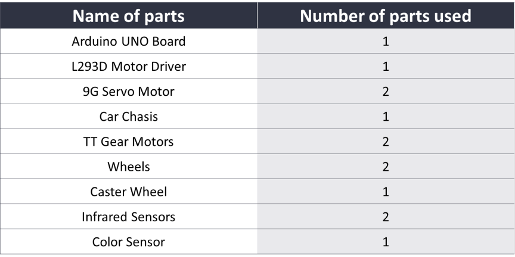

WHY AGROBOT?
Aliquam sodales ultricies erat, eget dictum odio ultricies vel. Curabitur imperdiet sapien felis, in tincidunt purus feugiat vel. Pellentesque sagittis odio ligula. Aliquam risus risus, tincidunt ac nulla at, gravida molestie mauris. Proin auctor tincidunt lacinia. In hendrerit mauris ante, nec interdum quam sollicitudin ac. Vivamus massa lacus, tincidunt in massa eu, molestie hendrerit lacus. Pellentesque hendrerit pulvinar nisl vel consectetur. Nullam nibh odio, ullamcorper quis tristique eu, posuere a leo.
Requirements
How it works?
The idea behind this robot was to detect the black line using 2 infrared sensors and move the robot accordingly using L293D motor driver module. Now the question is how to implement the line sensing mechanism in a Line Following Robot. We all know that the reflection of light on the white surface is maximum and minimum on the black surface because the black surface absorbs maximum amount of light. So, we are going to use this property of light to detect the line. To detect light, either light-dependent resistor or an Infrared sensor can be used. For this project, we are going with the Infrared sensor because of its higher accuracy. To detect the line, we place two Infrared sensors one on the left and other on the right side of the robot. We then place the robot on the line such that the line lies in the middle of both sensors. Now comes the motor driver, the reason to use a motor driver here is because the output signal of an Arduino is not sufficient to drive the motor, furthermore, we need to rotate the motors in both directions, therefore we use a motor driver to drive the motor as required and also the motor driver is able to supply sufficient current to drive the motor. Here, we are using a L293D motor driver which is sufficient for our 2 motors.
How does the color-sensor works?
The TCS3200 color sensor can detect a wide variety of colors based on their wavelength. This sensor is specially useful for color recognition projects such as color matching, color sorting and much more. The TCS3200 color sensor uses a TAOS TCS3200 RGB sensor chip to detect color. It also contains four white LEDs that light up the object in front of it. The TCS3200 has an array of photodiodes with 4 different filters. A photodiode is simply a semiconductor device that converts light into current. The sensor has a current-to-frequency converter that converts the photodiodes’ readings into a square wave with a frequency that is proportional to the light intensity of the chosen color. This frequency is then, read by the Arduino.
CIRCUIT
--CODE--
#include
//defining pins and variables
#define lefts A4
#define rights A5
//defining motors
AF_DCMotor motor1(3, MOTOR12_8KHZ);
AF_DCMotor motor2(4, MOTOR12_8KHZ);
void setup() {
//setting the speed of motors
motor1.setSpeed(250);
motor2.setSpeed(200);
//declaring pin types
pinMode(lefts,INPUT);
pinMode(rights,INPUT);
//begin serial communication
Serial.begin(9600);
}
void loop(){
//printing values of the sensors to the serial monitor
Serial.println(analogRead(lefts));
Serial.println(analogRead(rights));
//line detected by both
if(analogRead(lefts)<=400 && analogRead(rights)<=400){
//stop
motor1.run(RELEASE);
motor2.run(RELEASE);
}
//line detected by left sensor
else if(analogRead(lefts)<=400 && !analogRead(rights)<=400){
//turn left
motor2.run(FORWARD);
motor1.run(RELEASE);
motor2.run(FORWARD);
}
//line detected by right sensor
else if(!analogRead(lefts)<=400 && analogRead(rights)<=400){
//turn right
motor1.run(FORWARD);
motor2.run(RELEASE);
}
//line detected by none
else if(!analogRead(lefts)<=400 && !analogRead(rights)<=400){
//stop
motor1.run(BACKWARD);
motor2.run(BACKWARD);
}
}
Usefull links
- https://techmaze.romman.store/